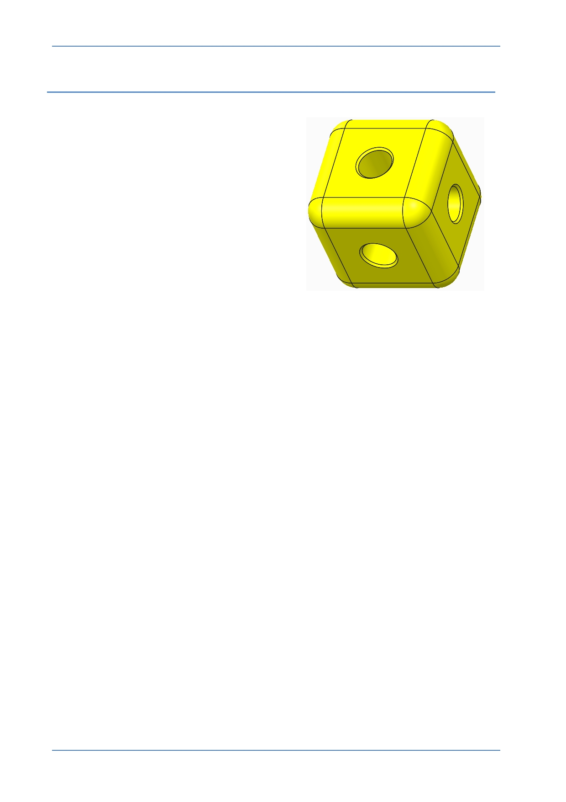

PTC Academic Program
Procedure – Part Modeling – Corner cube
Scenario
This section will teach you how to model a
cube shaped corner block for a construction
kit.
You will create a new part, start an extrude,
add a square sketch, and use this to extrude
the cube shape.
Extruded circles will be used to create two of
the holes and the Hole tool will be used for the
third hole.
Rounds on the outer corners and chamfers on
the holes will complete the model.
© 2012 PTC
Creo Parametric 2.0 Primer
Page 12